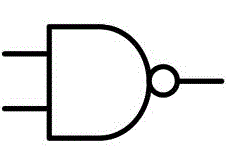

INSTRUCTIONS
1)Select Nand/Nor and their respective options To Perform Nand/Nor as Universal Experient
Experiment to perform logic of Nand and Nor as Universal Gate on kit

Nand as Universal
Nand as Or
Nand as And
Nand as Ex-OR
Nand as Ex-NOR
Solving Expression Using Nand
Nor as Universal
Nor as Or
Nor as And
Nor as Ex-OR
Nor as Ex-NOR
Solving Expression Using Nor